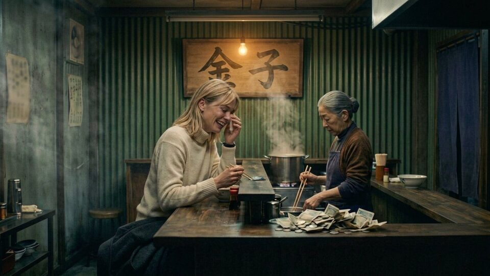
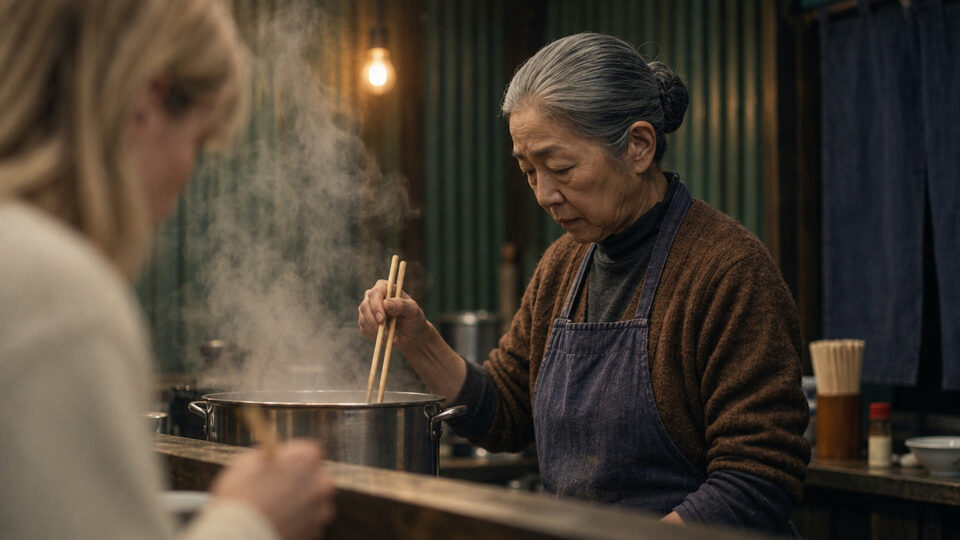

SHOT 01 · nw_s58 · nw_b963 (17.96s -> 5.25s + 12.71s)
Bring her
“My sister would love this place. She's never seen it. She only knows it from my stories. When I find her, I'll bring her here.”
Surrounding frames


Prompt & references
Create ONE horizontal widescreen 16:9 photorealistic cinematic film still for the Tokyo noir drama Nobody's Witness, bridging the two supplied adjacent reference frames of Kaneko's tiny noodle shop at night. Keep the exact same shop: green corrugated metal back wall, worn dark wooden counter, steaming steel pot, wooden sign under a warm bare bulb, and the same two women. Compose a warm medium shot along the counter: blonde Vera in her cream knit turtleneck, seated at the counter with an almost empty noodle bowl and a crumpled pile of bills and coins beside it, is finishing her food and laughing once at nothing while wiping the corner of her eye with her fingers; elderly Kaneko in her brown cardigan and dark blue apron stands behind the counter at the steaming pot, glancing at her with quiet, unguarded fondness. Nobody else is in the shop. Natural hands and proportions, soft tungsten light and steam haze, grounded 35mm film photography, full 16:9 landscape frame with headroom. No captions, subtitles, overlaid text or watermarks.
- Preceding shared still:
/film/img/s58/225-bring-her.jpg - Following still:
/film/img/s58/475-the-chopsticks-stop.jpg